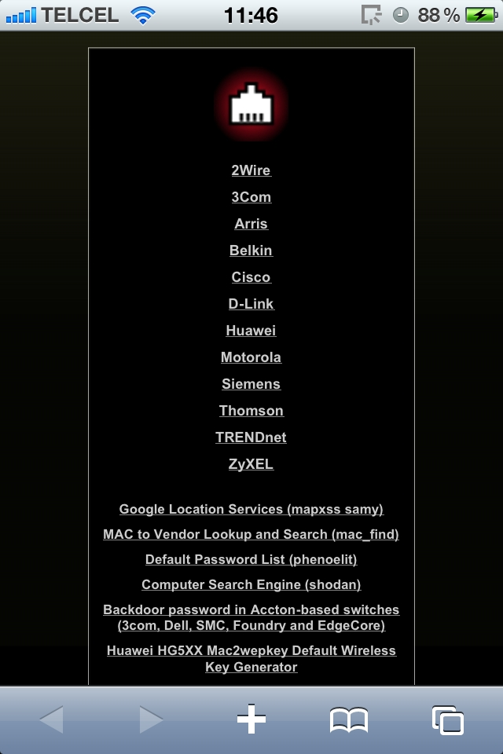
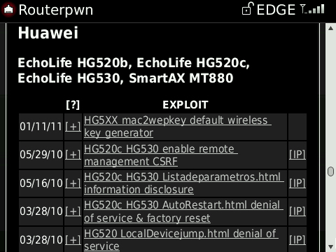
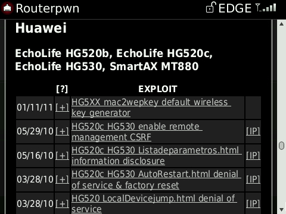
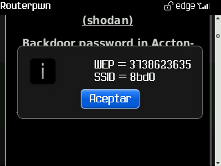
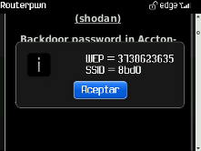
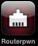

== ROUTERPWN.com ==
RouterPWN.com is a web application that aids in the exploitation of vulnerabilities in residential/SOHO edge devices such as routers, access points and switches.RouterPWN.com es una aplicación web diseñada para explotar vulnerabilidades en routers, puntos de acceso inalámbrico y switches generalmente utilizados en ambientes residenciales y pequeñas empresas.
== FEATURES ==
- RouterPWN allows you to run local and remote web exploits
- It is self-contained in one page, this allows for offline exploitation
- Made with HTML/Javascript so it runs in mobile devices with a browser
- Each exploit contains a link to the complete advisory
== CARACTERÍSTICAS ==
- RouterPWN te permite ejecutar exploits web locales y remotos
- Todo lo necesario está en una sola página, lo cual permite realizar explotaciones offline
- Hecho con HTML/Javascript, por lo cual funciona en dispositivos móviles que tengan un navegador
- Cada exploit contiene un enlace con mayor información sobre el exploit
== USAGE ==
- As simple as choosing an exploit and clicking on it!
- More information about each exploit is available by clicking on "[+]"
- If you want to change the IP address for the vulnerable device to attack click on "[SET IP]" in the exploit you want to use
== UTILIZACIÓN ==
- ¡Es tan simple como escoger un exploit y hacer clic en el!
- Se puede obtener más información de cada exploit haciendo clic a “[+]”
- Si deseas cambiar la dirección IP del dispositivo vulnerable a atacar haz clic en “[SET IP]” en el exploit que deseas utilizar.
== Screenshots ==
Routerpwn - iPhone:


Routerpwn - BlackBerry Curve 8900:

 

Routerpwn - BlackBerry Curve 8520:

 

== Modules / Password Generators ==
Sagem Fast Telnet Root Password Generator
A1/Telekom PRG EAV4202N Default WPA Key Generator
Discus DRG A225 WiFi router Default WPA2-PSK Key Generator
Thomson BBox BBKeys TG787 Default Wireless Key Generator
EasyBox Standard WPA2 Key Generator
ZynOS (Huawei) Configuration Decompressor
Thomson SpeedTouch STKeys Default Wireless Key Generator
Huawei HG5XX Mac2wepkey Default Wireless Key Generator
Backdoor password in Accton-based switches (3com, Dell, SMC, Foundry and EdgeCore)
Arris Password of The Day Generator
Belkin.XXX WPA Default Password
Arris DG860A NVRAM Backup Password Disclosure
Sagemcom f@st 3184 default wireless password (Cabovisão)
RuggedCom "factory" Backdoor Password Generator
Arris DG860A WPS PIN Generator
WLAN_XXXX or Jazztel_XXXX SSID Wi-Fi Default Password
Obtain the possible default Wi-Fi passwords for WLANXXXXXX, YaComXXXXXX and WiFiXXXXXX SSIDs
Huawei HG8245/HG8247 MAC Address to WPA Key
Sitecom WLR-4000/4004 routers default WPA Key Generator
Belkin F5D8235-4 v1000, F5D8231-4 v5000, F9K1104 v1000 - WPS from MAC Address
== Exploits ==
20x 27x authentication bypass (xss + info disclosure)
17x 18x 20x 27x CRLF denial of service remote MDC
17x 18x 20x 27x CRLF denial of service
17x 18x 20x 27x password_required.html authentication bypass
17x 18x 20x 27x CD35_SETUP_01 authentication bypass
17x 18x 20x 27x CD35_SETUP_01 password reset
17x 18x 20x 27x DSL denial of service
17x 18x 20x 27x mgmt_data configuration disclosure
17x 18x 20x 27x H04 authentication bypass
17x 18x 20x 27x 38x Add domain to hosts table CSRF
Backdoor password in Accton-based switches (3com, Dell, SMC, Foundry and EdgeCore)
iMC Intelligent Management Center configuration disclosure
iMC Intelligent Management Center traversal
OfficeConnect command execution
AP 8760 auhentication bypass
OfficeConnect configuration disclosure
OfficeConnect 3CRWE454G72 configuration disclosure
3cradsl72 configuration disclosure
3cradsl72 information disclosure & authenication bypass
812 denial of service
812 denial of service 2
Arris Password of The Day (list.txt)
Arris password of the day web interface
AR-804gu command execution
AR-804gu file disclosure
AR-804gu directory listing
F5D7234-4 v5 admin password md5
F5D8233-4 v3 configuration disclosure
F5D8233-4 v3 router reboot
F5D7230-4 factory reset
F5D7230-4 change dns servers
MIMO F5D9230xx4 configuration disclosure
WAG120N Change admin password
WAG120N Add admin user
WAP54Gv3 debug interface (Gemtek:gemtekswd)
WRT54G enable remote interface
WRT54G config disclosure
WRT54G restore factory defaults
WRT54G last password in plain text
WRT54G disable wifi encription
WRT54G change admin password
D-Link WBR-1310 Authentication Bypass set new password
D-Link DIR-615, DIR-320, DIR-300 Authentication Bypass
D-Link DAP-1160 Authentication Bypass
D-Link DIR-615 change password & enable remote admin
D-Link DAP-1320 Wireless Range Extender - Directory Traversal
DSL-G604T change DNS servers
D-Link DIR-615 configuration disclosure
704P denial of service
DSL-G624T DSL-G604T directory traversal
DWL-7x00AP configuration disclosure
G604T DSL Routers "firmwarecfg" Authentication Bypass
HG5XX mac2wepkey default wireless key generator
HG520 rpADSLMode_1 denial of service
HG520 HTTP auth denial of service
HG520 rpEthernet_1 denial of service
HG520c HG530 enable remote management CSRF
HG520c HG530 Listadeparametros.html information disclosure
HG520c HG530 AutoRestart.html denial of service & factory reset
HG520 LocalDevicejump.html denial of service
HG510 rebootinfo.cgi denial of service
SmartAX MT880 default password
SmartAX MT880 add administrator account
SmartAX MT880 disable firewall/anti-dos w/default pass
ZyNOS configuration disclosure
SBG900 change admin password
SBG900 turn off firewall
SBG900 enable remote access
SBG900 disable DHCP & add custom DNS server
WNAP210 authentication bypass
WNDAP350, WNAP210 BackupConfig.php config disclosure
CG3100D privilege escalation
RP614v4 config disclosure
WNR2000 information disclosure
WNR2000 information disclosure
WNR2000 config disclosure
DG632 auth bypass (config disclosure)
DG632 auth bypass
DG632 'firmwarecfg' denial of service
WGR614v9 denial of service
SSL312 VPN denial of service
FVS318 content filtering bypass
FVS318 log file arbitrary content injection
DG834G enable telnet root shell
WG602 undocumented admin account (superman)
WG602 undocumented admin account (super)
FlexiISN auth bypass AAA Configuration
FlexiISN auth bypass Aggregation Class Configuration
FlexiISN auth bypass GGSN general Configuration
FlexiISN auth bypass Network Access & services
5200 Default administrator account
5200 Host authentication bypass
5200 Configuration disclosure /.cfg
SE461 denial of service
ST585, TG585n user.ini arbitrary download vulnerability
ST585 Redirect domain CSRF
ST585 Add administrator account CSRF
bthomehub call number (voice-jacking) auth bypass
bthomehub authentication bypass
bthomehub enable remote access and change tech password
bthomehub disable wifi
TEW-633GR A-to-C authentication bypass
TEW-633GR unauthorized factory reset
ZyWALL USG client side authorization config disclosure
G-570S configuration disclosure
Prestige configuration disclosure
Prestige privilege escalation
Prestige default password
ZyNOS configuration disclosure
Zywall2 Persistent Cross Site Scripting
Prestige unauthorized reset
DNA-A-211, UT300R2U information disclosure
Fibrehome HG-110 Local File Include and Directory/Path Traversal
Fibrehome HG-110 Cross site scripting
Zyxel O2 Classic persistent cross site scripting
Thomson ST585 Cross site scripting
CT-5367 Change ALL passwords
CT-5367 Information Disclosure
CT-507IT Cross site scripting
CT-536 HG-536+ Information Disclosure
CT-536 HG-536+ Configuration Disclosure
DSL-500T CSRF reset password
DSL-500T Directory Traversal (post auth)
DSL-500T old "firmwarecfg" Authentication Bypass
2701HGV-E 2700HGV-2 2700HG singtel default mdc password DoS
CT-5624 Info disclosure / Change passwords
X7968 cross site scripting
X7968 persistent cross site scripting
X7968 open port for ip CSRF
X7968 denial of service
CT-53XX CT-5071 CT-56XX Put a local IP in DMZ
CT-53XX CT-5071 CT-56XX Enable remote admin
DD-WRT information disclosure
DD-WRT command execution
2200 Sprint Verizon configuration disclosure
2352 Vodafone configuration disclosure
AirOS v3.6.1 v4.0 v5.x command execution
AirOS Remote Command Execution
HG5xx remote ppp password disclosure
DAP-1150 save configuration CSRF
DAP-1150 denial of service
DNS-320 DNS-325 command execution
DNS-320 DNS-325 information disclosure
DNS-320 DNS-325 information disclosure
TV-IP Cameras authentication bypass
2Wire remote administration password disclosure
D-Link DSL-2640B CSRF
Netgear remote information disclosure
Sagem F@ST 2604 CSRF Change Admin Password
HG866 Authentication Bypass
HG866 Denial of service
F9K1002 Authentication Bypass
F9K1002 Web Management Password Exposure
BlackArmor NAS Password Reset
TD-8817 Blank admin password CSRF
Linksys EA2700 XSS Vulnerability apply.cgi
Linksys EA2700 File Path Traversal Vulnerability
Linksys EA2700 Password Change Insufficient Authentication and CSRF Vulnerability
Linksys Router Source Code Disclosure
Asus RT-N66U command execution
Asus RT-N56U RT-AC66U command execution
Asus RT-N56U RT-AC66U reset admin password enable remote http csrf
TRENDnet TEW 812DRU CSRF Change Admin Credentials
TRENDnet TEW 812DRU CSRF Enable Remote Management
TRENDnet TEW 812DRU CSRF Enable Remote Telnet
TRENDnet TEW 812DRU TEW-692GR TEW-691GR Enable Telnet Backdoor
Alcatel Lucent I-240W-Q Authentication Bypass
Alcatel Lucent I-240W-Q - Command Execution
TP LINK WR1043ND Enable remote FTP CSRF
TP LINK WR1043ND denial of service
Netgear WNDR4700 Authentication bypass
Netgear WNDR4700 Unauthenticated information disclosure
Netgear WNDR3400 - Password Disclosure
Linksys WRT310Nv2 Cross site scripting
Dlink DIR 865L PHP file inclusion
Belkin N900 Change admin creds & enable remote MGMT CSRF
N900 ssid stored cross site scripting
N900 psk stored cross site scripting
Belkin N300 remove admin password & enable remote MGMT CSRF
Belkin F5D8236 4 v2 CSRF Enable Remote MGMT
D-Link DSL-2640U PPoE Data Disclosure (ADSL Router)
Sagem F@st 1500WG PPPoE Data Disclosure (ADSL Router)
2wire 4011G y 5012NV directory traversal
SMC SMCWBR14-G2 PPPoE Data Disclosure (ADSL Router)
DSL-2750U - Authentication Bypass
D-Link DWL-2100AP - Configuration Disclosure
TP-Link TD-8840t - Reset Password
Linksys X3000 - OS Command Inyection
Linksys WRT160nv2 - Remote Command Execution
Linksys WRT110 - Remote Command Execution
Cisco EPC3925 - Change Admin Password CSRF
Cisco DPC2420 - File Configuration Disclosure
TP-Link WDR740ND/WDR740N - Directory Traversal
D-LINK DIR-280 - Change Admin Password
Linksys X3000 - Add Admin Account
Belkin N150 Wireless Router Password Disclosure
ASMAX AR 1004g Password Disclosure
ZTE ZXHN H108N Admin Authentication Bypass
Cisco WLC 7.2.110.0 - Add Administrator CSRF
Cisco WLC 7.2.110.0 - DOS
EE Brightbox - Configuration Disclosure
D-Link DIR-615 D3 - Remote Command Execution
D-Link DIR-615 D3 - Change Admin Password CSRF
D-Link DSL-2740B - Enable Remote Management
D-Link DSL-2740B - Disable Firewall
D-Link DSL-2740B - Disable Wireless MAC Filter
Netgear Prosafe - Configuration Disclosure
Ubee Cablemas - Auth Bypass
ASUS RT-N16 - Text-plain Admin Password Disclosure
Netgear DGN2200 N300 - Remote Command Execution
Cisco Linksys E4200 - Directory Traversal
D-Link DSL-320B - Configuration Disclosure
Cisco Linksys WAG200GB - Remote Command Execution
Netgear DGN1000B - Remote Command Execution
D-Link DIR-300 - Remote Command Execution
Alcatel-Lucent OmniPCX Enterprise - masterCGI Arbitrary Command Execution
Netgear SPH200D - Directory Traversal
Zoom X4, X5 ADSL Modem and Router - Create New Administrator Account
Zyxel P-660HW-T1 v3 Wireless Router - Change Wifi (WPA2/PSK) password & SSID
Unicorn Router WB-3300NR - Factory Reset
Unicorn Router WB-3300NR - Change DNS
Netgear WNDR3700v4 - Persistent Authentication Bypass
Netgear WNDR3700v4 - Wi-Fi Configuration Disclosure
Binatone DT 850W Wireless Router - Change Admin Password
DGL-5500, DIR-855L, DIR-835 - Admin Password Disclosure
TP-Link WR1043ND - Change DNS CSRF
Cisco EPC3925 - Persistent Cross Site Scripting
Motorola SBG6580 Cable Modem & Wireless-N Router Denial of Service
ZTE WXV10 W300 - Change Admin Password
Linksys E1500 - Remote Command Execution
== Install ==
iPhone/iTouch (JailBreak not needed):Using Safari, browser the main url:
http://routerpwn.com
Select in Safari's main menu: [+]
Choose: "Add to home screen",
Enter a name or accept the default: "Routerpwn"
Click "Save".

Desde iPhone/iTouch (No se necesita JailBreak):
Utilizando Safari, entra a la siguiente liga:
http://routerpwn.com
Selecciona en el menú inferior de Safari: [+]
Selecciona: "Añadir a pantalla de inicio",
Ingresa un nombre para la aplicación: "Routerpwn"
y da click en "Guardar".
From another mobile device:
Add http://routerpwn.com to your bookmars.
Desde otro celular o dispositivo móvil:
Agrega http://routerpwn.com a los favoritos de tu navegador.